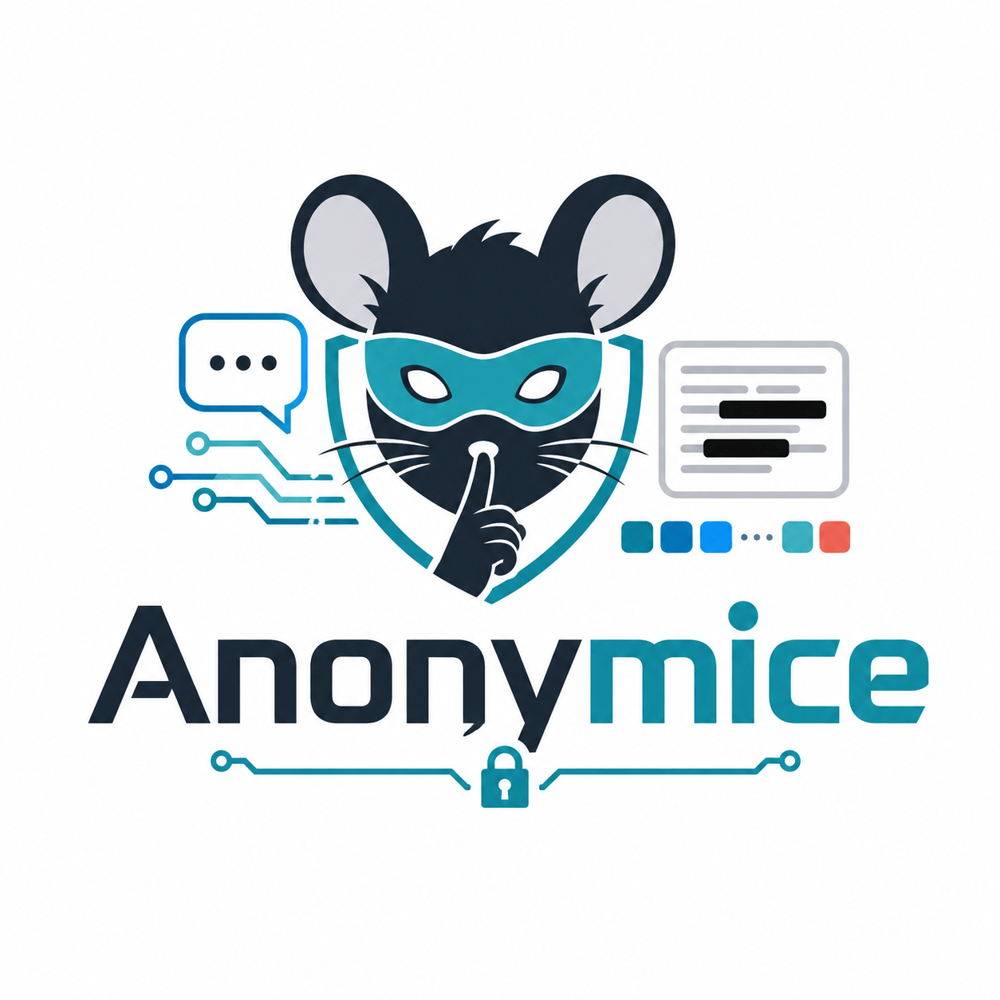

Your data crosses a boundary it shouldn't reach.
Anonymice puts a token there first.
Anonymice detects sensitive data, including names, IBANs, Swiss AHV numbers, cards, phone numbers and secrets, then replaces it with a reversible token before it crosses into an LLM provider, or onto a third-party page's own storage. The mapping back to the real value never leaves your infrastructure.

Watch a value cross the boundary
This is an illustration of the mechanism, not a capture of a running interface. A real value leaves your side as a token. It only becomes readable again on your side.
The same tokenizer, wherever the data actually is
Sensitive data leaves through two doors: the API calls your application makes, and the web pages people copy from. Anonymice closes both with one detection and token engine, not two separate products with two separate ideas of what a token is.
LLM Proxy, built on LiteLLM
A proxy that sits between your application and any model provider, with a reversible PII anonymization layer built in. Point your app at Anonymice instead of the provider directly: every prompt is scanned and tokenized before it leaves, every response is detokenized before it comes back.
Browser Extension
Runs on the pages people actually work in. It detects sensitive data on the page, highlights it so you know it's there, tokenizes it the instant you copy it, and restores the real value only when you paste it back somewhere you've marked trusted.
<PERSON_1> means
the same thing wherever it turns up. Each keeps its own vault today, and each
vault sits on your side of the boundary, never the destination's.
Every destination gets one of three trust levels
The browser extension applies this everywhere it runs, decided per site. It's the same question asked of every destination: what happens to a real value the instant it leaves your view?
Your own trusted ground
Sensitive spans are detected and highlighted so you always know they're there, but the value itself is left untouched. There's no boundary here to protect it from.
Reaches storage only as a token
The destination receives and stores the token, never the real value. You still see the real value, rendered back to you through a surface the destination itself cannot read.
The token is the only thing that exists there
Real data never enters at all. What you type, what gets pasted, what the page ever holds: it's the token, literally, end to end.
Detect → tokenize → transmit → detokenize
The same four steps run whether the boundary is a model provider's API or a third-party page's storage.
Find the sensitive spans
Names, IBANs, emails, secrets, and more are located in the text before anything is sent, either in the outgoing prompt or on the page in front of you.
Swap in a reversible token
Each value is replaced with a typed, reversible token. The mapping back to the real value is written to a vault that stays on your side.
Only the token crosses
The tokenized text is what reaches the model provider, or what lands in a page's own storage. The real value was never in that payload.
Restore it, on your side
A response is decoded back to real values before you read it. A trusted page's tokens are resolved back for you, never for the page.
Swiss Data Airlock, sponsored by Natron Tech
Anonymice was built for the Swiss Data Airlock challenge at BärnHäckt 2026, sponsored by Natron Tech. It's an independent, open-source submission. Anonymice isn't affiliated with Natron Tech beyond the challenge itself.